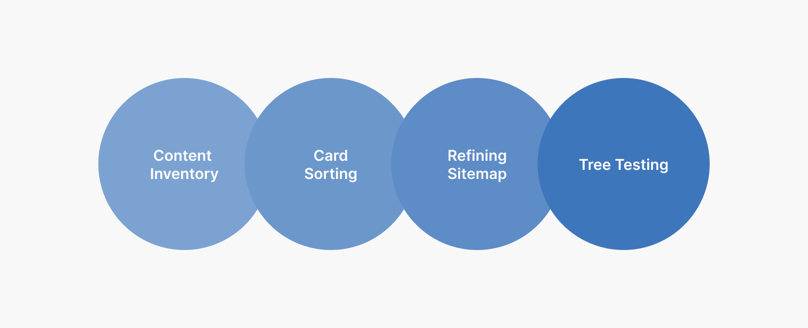
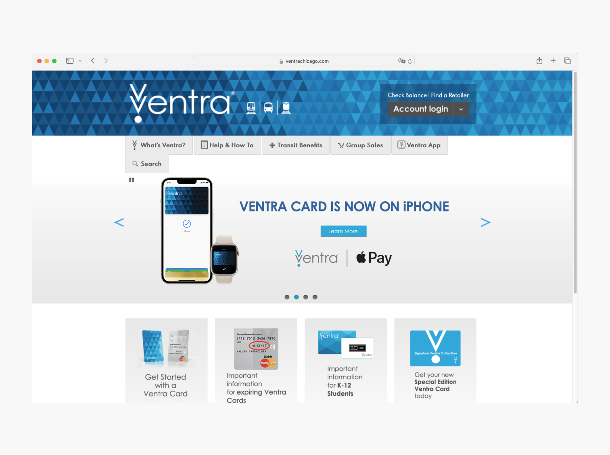
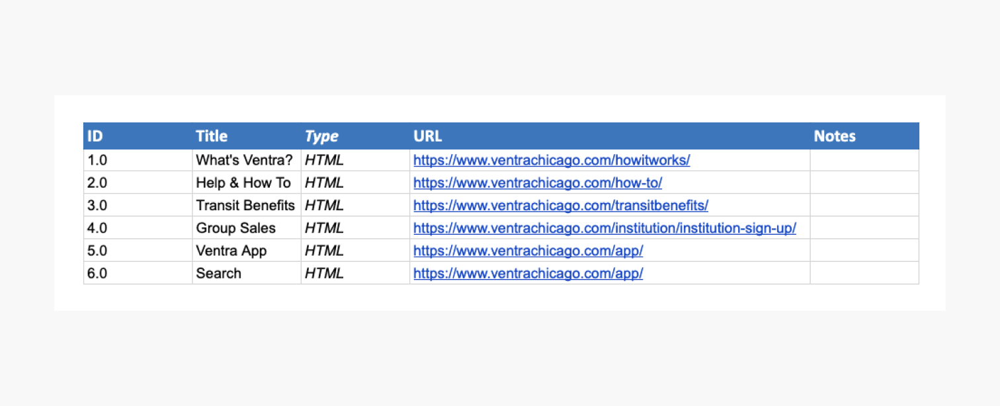
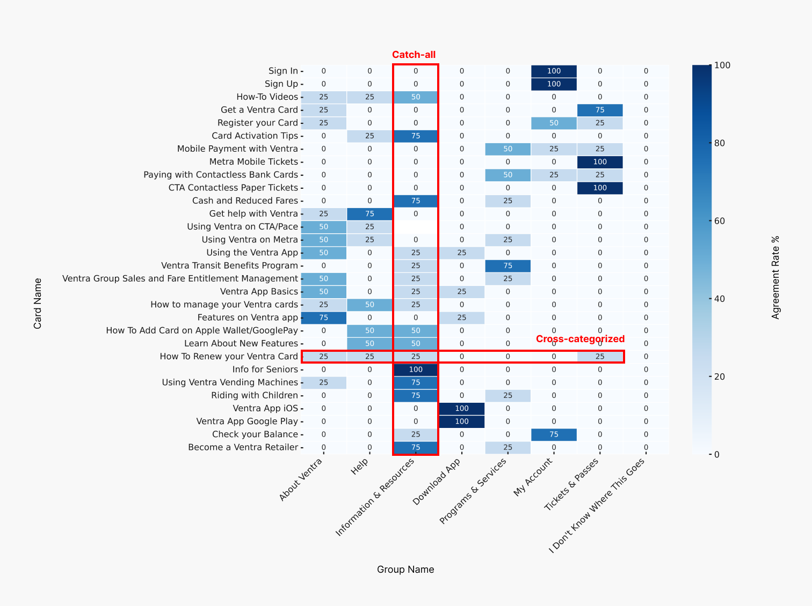
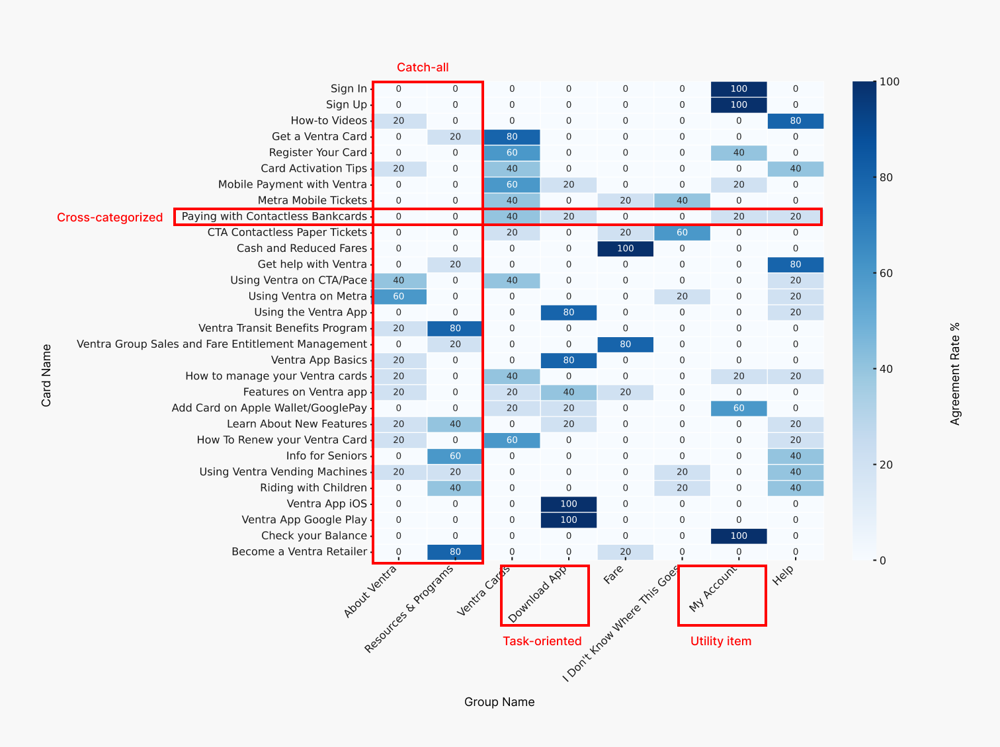
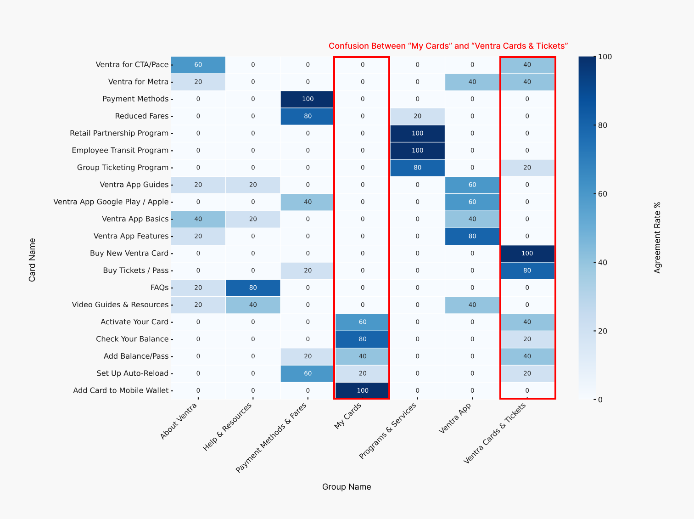

Ventra Website Redesign Case Study
Restructuring navigation and improving information architecture to simplify fare access across Chicago’s transit system.

- UX Designer
- UI Designer
- Researcher
- UX Designer
- UI Designer
- Researcher
- Proven By Users (Card sort & tree testing)
- Figma
- Figjam
- 8 Weeks, Summer 2024
- School Project at DePaul
Brief
When I first landed on the Ventra website, I felt the same confusion many first-time users likely experience: What can I actually do here? As someone who regularly uses the CTA and prefers the ease of mobile apps, I was immediately struck by how fragmented and unclear the website’s navigation felt. This led our team to select the Ventra website as our redesign project, aiming to improve its information architecture and usability.
Challenge
1. Organized by broad categories, not user goals
The Ventra website organizes content by broad categories instead of aligning with user goals or tasks.
2. Unclear for first-time users
This structure causes first-time users to struggle with understanding what they can do on the site.
3. Disconnect between labels and intent
The core issue lies in the disconnect between navigation labels and user intent, making it hard for users to complete tasks smoothly.
Resulting user frustrations
- Unclear pathways
- Excessive clicking and searching
- Confusion and frustration
Objectives
1. Improve hierachy and structure
Redesign the site’s hierarchy for a more intuitive navigation, reducing exploration and improving access to options..
2. Refine categories for specificity
Clarify and narrow down category definitions to make it easier for users to find information quickly.
3. Clarify navigation lables
Revise labels to be more descriptive and straightforward, removing ambiguity and guiding users effectively.
User Scenarios
- A tech-savvy rider who wants to use the mobile app for convenience.
- A daily commuter needing to reload their Ventra Card.
- A new user trying to purchase their first Ventra Card.
Outcome
When I first landed on the Ventra website, I felt the same confusion many first-time users likely experience: What can I actually do here? As someone who regularly uses the CTA and prefers the ease of mobile apps, I was immediately struck by how fragmented and unclear the website’s navigation felt. This led our team to select the Ventra website as our redesign project, aiming to improve its information architecture and usability.
Project Timeline
Our process was structured to move from understanding the existing system to validating improvements through testing. We began with a detailed content inventory to map out what was currently on the site. This helped us identify redundancies, vague labels, and inconsistencies in hierarchy.
From there, we ran two rounds of card sorting to uncover how users naturally grouped information. These insights directly shaped our revised sitemap. Finally, we conducted tree testing to evaluate whether our restructured navigation made it easier for users to find what they were looking for using only link labels.
Each phase built on the last, helping us evolve the structure from assumption-based to user-validated.

What is Ventra?
Ventra is the official fare payment system for Chicago's CTA, Pace, and Metra services. The platform allows riders to manage transportation using physical Ventra Cards, mobile apps, contactless payments, and more. However, despite the range of offerings, the current site fails to communicate them clearly, especially to new users.

Content Inventory
The first step was analyzing the current navigation. We discovered overlapping categories, vague labels, and a mix of task- and topic-oriented items.
Issues
- Poor hierachy and structure
- Broad and vague categories
- Ambiguous navigation labels

First Iteration
Open Card Sort — 4 Participants
To begin restructuring Ventra’s navigation, we ran an open card sort with 29 items and 4 participants. This revealed how users naturally group content—and exposed several key issues in the site’s existing categorization.
1. “Information & Resources” Became a Catch-All
Too broad to be meaningful. Participants frequently placed unrelated content—like app features and card management—into this group. It became a dumping ground for anything unclear, revealing the need for tighter category boundaries.
2. Cross-Categorization Created Confusion
Cards didn’t have obvious homes. Payment-related items like “Mobile Payment with Ventra” or “Contactless Bank Cards” didn’t clearly belong anywhere. Card management tasks (renewing, registering, mobile wallet setup) were also scattered across groups—indicating users saw them as a distinct category.
3. Some Categories Didn’t Make Sense
“Tickets & Passes” and “Programs & Services” underperformed. Users didn’t associate relevant cards with these labels. The former lacked clarity, while the latter gathered unrelated content. Only the Ventra Transit Benefits Program fit cleanly, suggesting “Programs & Services” isn’t effective as a top-level group.

First Sitemap — Initial Refinement
This version of the sitemap was shaped directly by card sort findings. It aimed to reduce ambiguity and reflect how users mentally organize content.
1. Group Added: “Ventra Cards”
Separated card actions from general info. Users clearly treated card-related tasks as their own theme. Creating a distinct group made navigation more intuitive.
2. Grop Added: “Fare”
Distinguished fare from cards. We introduced a dedicated section for payment and ticket info, reducing overlap between payment methods and card actions.
3. Group Merged: “Programs & Resources”
Combined two weak categories. To address catch-all issues, we merged “Information & Resources” and “Programs & Services” into one more clearly scoped group.

Second Iteration
Second Round — 6 Participants
In the first round of testing our revised categories, we had 6 participants sort 29 cards. No label changes were made from the pilot. Unfortunately, results showed minimal improvement. Several problems remained:
1. “Programs & Resources” Became the New Catch-All
Still too broad. Cards like “Get Help with Ventra,” “Become a Ventra Retailer,” “Info for Seniors,” and “Using Vending Machines” were dropped here—even when better options existed. This indicated that the category lacked clear boundaries and purpose.
2. “My Account” Was Misplaced
Not a content category. Participants treated “My Account” like a navigation section, but it’s a utility function and shouldn’t appear in the top-level menu. It belongs in a persistent header or settings area.
3. Tasks and Topics Were Mixed Together
Inconsistent structure. Items like “Download App” (a task) were placed alongside topics like “Fare” and “Ventra Cards,” leading to cognitive friction. Participants were unsure whether they were navigating actions or information.
4. Fare-Related Cards Still Caused Confusion
Unclear categorization. Cards like “Mobile Payment with Ventra,” “Paying with Contactless Bank Cards,” and “CTA Paper Tickets” were placed inconsistently. Participants often split them between unrelated groups.

Third Round — 5 Participants
In the second round, we renamed 19 cards and 6 groups. Results showed significant improvement in categorization. However, a few challenges remained:
1. Overlap Between “My Cards” and “Ventra Cards”
Terminology confusion. Some cards meant for “My Cards” were placed under “Ventra Cards & Tickets,” suggesting that users saw these categories as too similar. Clearer naming or grouping may be needed.
2. “About Ventra” Still Acting as a Catch-All
Low clarity label. Even after renaming, “About Ventra” remained a fallback group. Many unrelated cards were still placed there, indicating the label wasn’t helping users identify its purpose.

Second Sitemap — Refined Architecture
We developed the second version of the sitemap based on feedback from both card sort rounds and input from our professor. This iteration addressed key problems in label clarity and category structure.
1. Split “Fare” into Two Distinct Groups
Introduced: “Payment Methods & Fares” and “Ventra Cards & Tickets.” Users were confusing fare info with card-related content. By creating two clear, distinct groups, we improved label precision and discoverability.
2. Renamed “Programs & Services”
Clarified category scope. The new label better communicates the type of content included—especially helpful for organizing broader support offerings like discounts and outreach programs.
3. Moved “My Account” to Utility Section
Resolved structural inconsistency. We moved “My Account” out of the top nav and into a persistent utility area. This aligned it with common user expectations for login and settings access.

Tree Testing
Purpose
Tree testing was conducted across two phases—Pilot & Final—to evaluate the usability of our navigation structure and test how easily users could locate content using only link labels (without visual context). Our goal was to identify confusing labels, misleading categories, and low-agreement patterns that could inform further refinement of the site’s information architecture.
Participants & Setup
- 7 total prompts
- Each task designed to mirror real-world user scenarios
- Users selected paths through the navigation structure using a tree testing tool
- Success measured by whether participants reached the correct location directly or indirectly
📊 Summary of Prompts & Success Rates
| Task # | Prompt Summary | Success Rate | Key Issues Identified |
|---|---|---|---|
| 1 | Find out how to use Ventra for CTA/Pace | ✅ 83.3% | Strong agreement |
| 2 | Check if there are employee deals | ✅ 83.3% | Clear labeling worked |
| 3 | Find a detailed guide for using Ventra card on your phone | ⚠️ 50.0% | Confusion between “Help & Resources” and “App” |
| 4 | Check for student discount info | ✅ 66.7% | Mostly clear, minor confusion |
| 5 | Buy a Ventra card online | ⚠️ 50.0% | Many expected this under “Payment Methods” |
| 6 | Add a new Ventra card to your phone | ⚠️ 50.0% | Card placed incorrectly under multiple groups |
| 7 | Add balance to your card (card is about to expire) | ⚠️ 50.0% | “Expired” keyword confused participants |
Key Findings
- Payment & Card Management Paths Remain Confusing: Participants frequently bounced between “Ventra Cards & Tickets,” “Payment Methods & Fares,” and “My Cards” when trying to complete actions like adding balance or setting up a card.
- Catch-All Sections Cause Misrouting: Several users selected “Help & Resources” or “Programs & Services” when confused, suggesting these groups acted as fallback buckets and lacked clarity.
- Wording of Prompts Affects Performance: The phrase “card is about to expire” may have triggered thoughts of replacement rather than balance top-up (Task 7). Likewise, technical terms like “mobile wallet” may need more intuitive phrasing.
- Correct Paths Often Involved 3–5 Steps: Even for successful participants, indirect navigation showed a need for better scannability and label hierarchy.
Insights
Reflection
Embracing User-Centered Design
By analyzing and redesigning the complex and unfriendly navigation menu, we experienced firsthand the importance of user-centered design. Through this process, we identified key pain points, strengthened our problem-solving skills, and learned to prioritize clear communication and thoughtful information architecture.
The Power of Language
One of the most critical lessons was understanding the power of language—specifically, how the framing of words directly impacts user comprehension and engagement. Crafting meaningful and functional labels proved to be one of the most challenging yet valuable aspects of the project.
More Testing, More Confidence
If given more time, we would have conducted additional tree tests to observe how users navigate and complete specific tasks. These tests would help us improve the agreement rate found during card sorting and identify areas for refinement. In particular, we would focus more on the “Ventra Card & Tickets” category, where users often expressed confusion—especially around labels like “My Card.”
Involving Expert Users
We also recognized the value of involving more domain experts and experienced transit users in testing. Their perspectives could provide deeper insights into system-specific expectations. Additionally, moving beyond the limitations of free testing tools would allow us to gather more robust, high-quality feedback in future iterations.